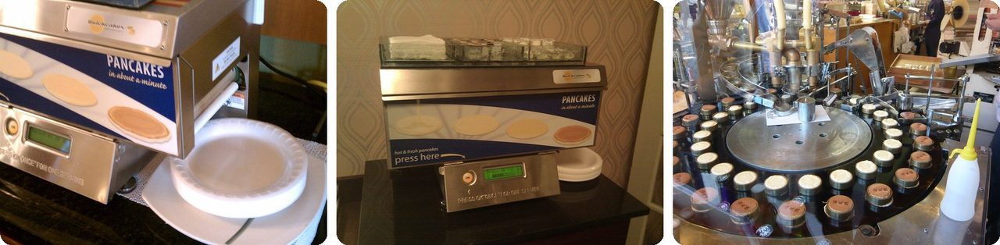
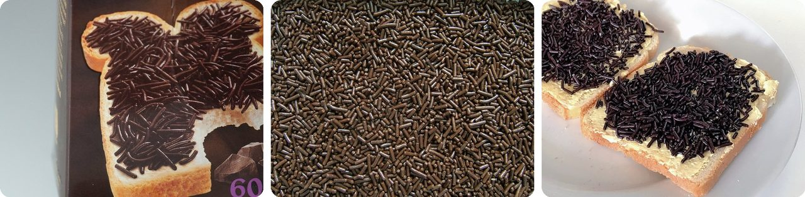
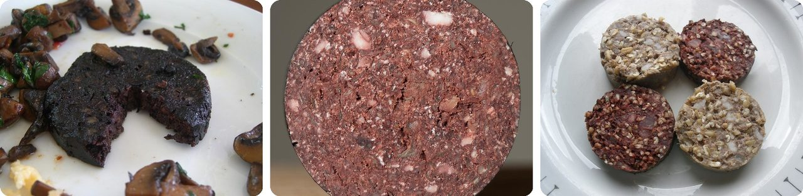

🌍 Top 10 Los desayunos de hotel más raros
26 de noviembre de 2026
1. 🇺🇸 Los huevos Benedict quizá empezaron como un pedido para la cruda
 En 1942, un corredor de bolsa de Wall Street ya retirado, Lemuel Benedict, le contó a la revista The New Yorker cómo nació un desayuno famoso. Dijo que en 1894 entró al Hotel Waldorf de Nueva York buscando algo para curarse la cruda.
En 1942, un corredor de bolsa de Wall Street ya retirado, Lemuel Benedict, le contó a la revista The New Yorker cómo nació un desayuno famoso. Dijo que en 1894 entró al Hotel Waldorf de Nueva York buscando algo para curarse la cruda.
Pidió pan tostado con mantequilla, huevos pochados, tocino crujiente y salsa holandesa aparte, una salsa espesa hecha con huevo, limón y mantequilla derretida. Al jefe de meseros del hotel, Oscar Tschirky, le gustó tanto que lo puso en los menús de desayuno y comida. Solo cambió el tocino por jamón y el pan tostado por un muffin inglés.
No es la única historia. El restaurante Delmonico's dice que hizo el platillo primero, en 1860.
En resumen, un desayuno clásico de Estados Unidos quizá empezó como un remedio para sentirse fatal.
2. 🏴 Un hotel de Londres inventó un omelette de pescado para un novelista
El escritor Arnold Bennett comía tan seguido en el Savoy Grill, dentro del Hotel Savoy de Londres, que el chef, Jean Baptiste Virlogeux, creó un omelette solo para él.
No es un omelette normal. Va relleno de eglefino ahumado, un pescado con sabor a humo, más queso cheddar y crema. Sigue siendo un clásico británico, y una versión todavía está en el menú del Savoy Grill.
A Bennett le gustaba tanto el hotel que estudió cómo funcionaba y en 1930 escribió toda una novela sobre un hotel parecido, Imperial Palace.
Imagínalo como un fan que terminó con un platillo con su nombre.
3. 🇮🇱 Los hoteles de Israel intentaron cancelar su desayuno gigante, y fracasaron
 El desayuno israelí nació en los kibutz, granjas donde la gente vivía y trabajaba en comunidad. Los trabajadores comían algo ligero temprano, se iban al campo unas horas y luego regresaban a un bufé enorme en el comedor compartido.
El desayuno israelí nació en los kibutz, granjas donde la gente vivía y trabajaba en comunidad. Los trabajadores comían algo ligero temprano, se iban al campo unas horas y luego regresaban a un bufé enorme en el comedor compartido.
Para los años 50, los hoteles ya lo copiaban: ensaladas, quesos, huevos, pescado como arenque, panes y pan dulce. Casi nunca hay carne, porque las leyes judías de la comida dicen que la carne y los lácteos no se comen en la misma comida.
En 1979, los dueños de hoteles decidieron cambiarlo por un desayuno más chico para ahorrar dinero. Una de las razones que dieron: los turistas agarraban comida de más para guardarla para después. El plan no funcionó, y el gran bufé regresó.
Dicho de otro modo, el desayuno era tan bueno que los huéspedes lo guardaban para luego.
4. 🛎️ El desayuno continental lo inventaron los hoteles, no Europa
 "Continental" se refiere a Europa continental, pero este desayuno lo creó el negocio hotelero en países de habla inglesa. El nombre apareció por primera vez en Estados Unidos en 1896, en un libro de Nueva York sobre salud pública.
"Continental" se refiere a Europa continental, pero este desayuno lo creó el negocio hotelero en países de habla inglesa. El nombre apareció por primera vez en Estados Unidos en 1896, en un libro de Nueva York sobre salud pública.
La comida no se eligió por su sabor. Se eligió porque aguanta bien sin refrigerador y es fácil de servir a grupos grandes: pan, muffins, pan dulce, fruta, cereal y paquetitos de mantequilla y mermelada.
Por eso a los hoteles baratos les encanta. Necesita menos trabajadores para prepararlo y servirlo que un desayuno caliente.
En resumen, es un desayuno hecho para aguantar toda la mañana en la mesa.
5. 🥞 Algunos hoteles dejan que los huéspedes usen su propia máquina de hot cakes

La primera máquina de hot cakes que se conoce se inventó en Portland, Oregón, en 1928. Unos chorritos de aire empujaban la masa sobre una plancha caliente que giraba, una repisita volteaba cada hot cake a la mitad de la cocción, y una compuerta sacaba el hot cake terminado.Hoy, algunos hoteles tienen máquinas de hot cakes que los huéspedes pueden usar ellos mismos, y también aparecen en salas VIP de aeropuertos.
Hay gente que hasta ha construido la suya. En 1977, un club de Ocala, Florida, hizo una que necesitaba cuatro personas para funcionar, y cocinaba de 750 a 1,000 hot cakes por hora, más de 12 cada minuto.
Un cocinero robot en el comedor del desayuno.
6. 🇯🇵 El natto pegajoso de Japón quizá empezó como comida de caballo
 El natto es soya fermentada por una bacteria buena. Muchas veces se come de desayuno con arroz. En Japón, las posadas tradicionales llamadas ryokan sirven un desayuno tradicional completo, y los hoteles de estilo occidental suelen ofrecer una mezcla de comida japonesa y occidental.
El natto es soya fermentada por una bacteria buena. Muchas veces se come de desayuno con arroz. En Japón, las posadas tradicionales llamadas ryokan sirven un desayuno tradicional completo, y los hoteles de estilo occidental suelen ofrecer una mezcla de comida japonesa y occidental.
El natto huele un poco a queso fuerte y añejo. Cuando lo revuelves, hace muchísimos hilos pegajosos, como queso derretido que no se quiere soltar.
Una leyenda dice que empezó con los soldados de un samurái. Estaban hirviendo soya para sus caballos cuando los atacaron, así que metieron los frijoles en costales de paja. Unos días después, la soya se había fermentado, y los soldados se la comieron de todos modos y les gustó.
Imagínalo como un accidente que se volvió desayuno.
7. 🇨🇳 Los huevos centenarios no tienen 100 años, solo cambiaron muchísimo
 Los huevos centenarios, pídàn (皮蛋) en chino, son huevos de pato, gallina o codorniz envueltos en una mezcla de arcilla, ceniza, sal, cal y cáscara de arroz. Se quedan ahí de semanas a meses, no un siglo.
Los huevos centenarios, pídàn (皮蛋) en chino, son huevos de pato, gallina o codorniz envueltos en una mezcla de arcilla, ceniza, sal, cal y cáscara de arroz. Se quedan ahí de semanas a meses, no un siglo.
La mezcla poco a poco convierte el huevo en algo nuevo. La yema se pone de un gris verdoso oscuro y cremosa, y la clara se vuelve una gelatina café transparente. Los mejores tienen dibujos como ramas de pino en la clara.
En Tailandia y Laos, su nombre significa "huevo de orina de caballo", pero no se hacen con pipí de caballo. Eso es solo un mito, quizá por su olor fuerte. Algunas familias chinas los cortan en pedacitos y los cocinan en congee de huevo centenario con cerdo magro, un atole de arroz llamado pídàn shòuròu zhōu (皮蛋瘦肉粥).
Dicho de otro modo, es un huevo al que le dieron un cambio de look total en un baño de lodo.
8. 🇸🇪 En Suecia exprimen huevos de pescado de un tubo para desayunar
 Un desayuno típico sueco es un sándwich abierto, y uno de los ingredientes favoritos para ponerle encima es smörgåskaviar, una pasta para untar hecha con huevos de pescado. Una marca clásica es Kalles, hecha con hueva de bacalao (huevos de pescado) ahumada, con azúcar y sal.
Un desayuno típico sueco es un sándwich abierto, y uno de los ingredientes favoritos para ponerle encima es smörgåskaviar, una pasta para untar hecha con huevos de pescado. Una marca clásica es Kalles, hecha con hueva de bacalao (huevos de pescado) ahumada, con azúcar y sal.
Viene en un tubo de metal, como pasta de dientes. Es a propósito: los tubos de plástico vuelven a chupar aire cuando los aprietas, y el aire echa a perder la pasta. Un tubo de metal simplemente se queda aplastado.
El niño del tubo desde 1954 es el hijo del jefe, Carl, apodado Kalle. En 2011, IKEA cambió Kalles por su propia marca, la gente se enojó, y en pocos años volvió a los estantes.
Es pasta de dientes para tu sándwich.
9. 🇳🇱 En los Países Bajos le ponen "granizo" de chocolate al pan

Hagelslag significa "granizada". Son chispitas de chocolate que en los Países Bajos se echan sobre pan con mantequilla para el desayuno o la comida. En Bélgica, de broma les dicen muizenstrontjes, "cacas de ratón".En los Países Bajos se comen unos 750,000 sándwiches de hagelslag al día. En un año, son más de 14 millones de kilos de chispas, más pesado que 2,000 elefantes.
El fabricante más grande, Venz, hace hagelslag de chocolate desde 1936. Hay de chocolate amargo, de leche y blanco, y hasta de sabores de fruta.
Así que en los Países Bajos comer chispas de chocolate en el desayuno es de lo más normal.
10. 🇬🇧 Hay gente que avienta morcilla en un concurso

El black pudding es una morcilla hecha con sangre de cerdo, grasa y avena o cebada. Es parte del desayuno inglés completo, junto con tocino, salchichas, huevos, frijoles y pan tostado.No a todos les gusta. En una encuesta de 2017 sobre el desayuno inglés completo perfecto, fue el ingrediente tradicional menos popular: solo lo eligieron el 35% de las veces.
Pero a algunos les encanta. En Ramsbottom, cerca de Mánchester, el Campeonato Mundial de Lanzamiento de Black Pudding se hace cada año desde los años 80. La gente avienta morcillas a montones de Yorkshire puddings, una broma sobre la vieja rivalidad entre Lancashire y Yorkshire.
Así que es un desayuno que también sirve de pelota.
Dato curioso
Arnold Bennett no fue el único famoso con un platillo en el Savoy. En 1893, el chef del hotel, Auguste Escoffier, inventó el durazno Melba, un postre con el nombre de la cantante australiana Nellie Melba. Bennett, Melba y el compositor Rossini comparten el honor de tener platillos famosos con su nombre. Las comidas con nombres de personas reales, de sándwiches a pizzas, podrían ser un tema delicioso para explorar después.
Créditos de las fotos (Wikimedia Commons)
- #1: Traditional Eggs Benedict.jpg by Mark Miller, CC BY-SA 4.0
- #1: Dancing at the Waldorf Astoria.jpg by Henry James Soulen, Public domain
- #1: Classic Eggs Benedict (flickr) by thebittenword.com, CC BY 2.0
- #2: Entrance to the Savoy Hotel, London - geograph.org.uk - 2281522.jpg by Anthony O'Neil, CC BY-SA 2.0
- #2: Omelette 1.jpg by Gaurav Dhwaj Khadka, CC BY-SA 4.0
- #2: Savoy Hotel Foyer - geograph.org.uk - 4519342.jpg by Anthony O'Neil, CC BY-SA 2.0
- #3: Israeli breakfast (flickr) by TeamRakbo, Public domain
- #3: Liat Portal for Foodie Disorder - Israeli breakfast in Tel Aviv.jpg by HaJunkiyada, CC BY-SA 4.0
- #3: Israeli breakfast (flickr) by Londo Mollari, CC BY-SA 2.0
- #4: Continental Breakfast.jpg by William J Sisti, CC BY-SA 2.0
- #4: Continental Breakfast (5618024251).jpg by Matt @ PEK from Taipei, Taiwan, CC BY-SA 2.0
- #4: Elizabeth Okie Paxton, Continental Breakfast.jpg by Elizabeth Okie Paxton, Public domain
- #5: Breakfast Pancake machine in Hotel. NICE. (flickr) by GoodNCrazy, CC BY 2.0
- #5: Pancake Machine (flickr) by reivax, CC BY-SA 2.0
- #5: Pancake machine (flickr) by WordRidden, CC BY 2.0
- #6: Natto mixed by Kinchan1.jpg by Kinchan1, CC BY 2.0
- #6: Rice seasoned with Natto.jpg by Qbwr8296, CC BY-SA 4.0
- #6: Natto (flickr) by snowpea&bokchoi, CC BY 2.0
- #7: Century egg porridge with pork by gigijin at Salvo Hotel Shanghai.jpg by gigijin from Salvo Hotel Shanghai, CC BY-SA 2.0
- #7: Century eggs with pickle ginger.jpg by Takeaway, CC BY-SA 3.0
- #7: A century eggs and Pork Congee from Chi Kee Congee Shop.jpg by Peachyeung316, CC BY-SA 4.0
- #8: Kalles Kaviar (cropped).jpg by Petey21, Public domain
- #8: KALLES kaviar (flickr) by kobakou, CC BY 2.0
- #8: Kalles Kaviar and eggs (flickr) by lovelihood, CC BY-SA 2.0
- #9: Hagelslag, a childrens favourite (flickr) by Ronald van der Graaf, CC BY 2.0
- #9: Hagelslag.jpg by No machine-readable author provided. DennisM assumed (based on copyright claims)., Public domain
- #9: Hagelslag chocolate sprinkles.jpg by Amin, CC BY-SA 4.0
- #10: Black Pudding - Classic English Breakfast - Jones the Grocer, Chadstone AUD13 (flickr) by avlxyz, CC BY-SA 2.0
- #10: Stornoway Black Pudding.jpg by Alexbrn, CC BY-SA 3.0
- #10: Irish black and white pudding slices.JPG by O'Dea, CC BY-SA 4.0


.jpg){kind=link}


.jpg){kind=link}